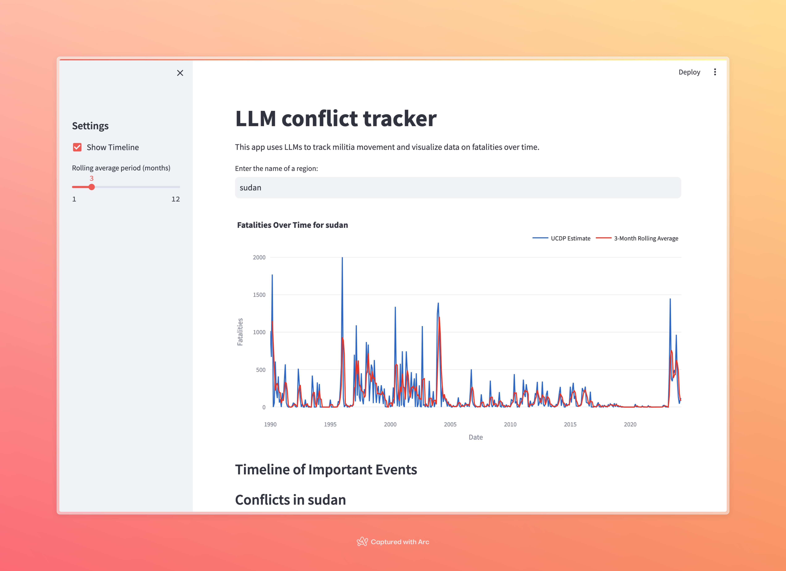
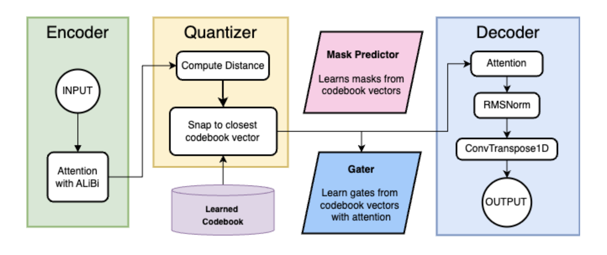
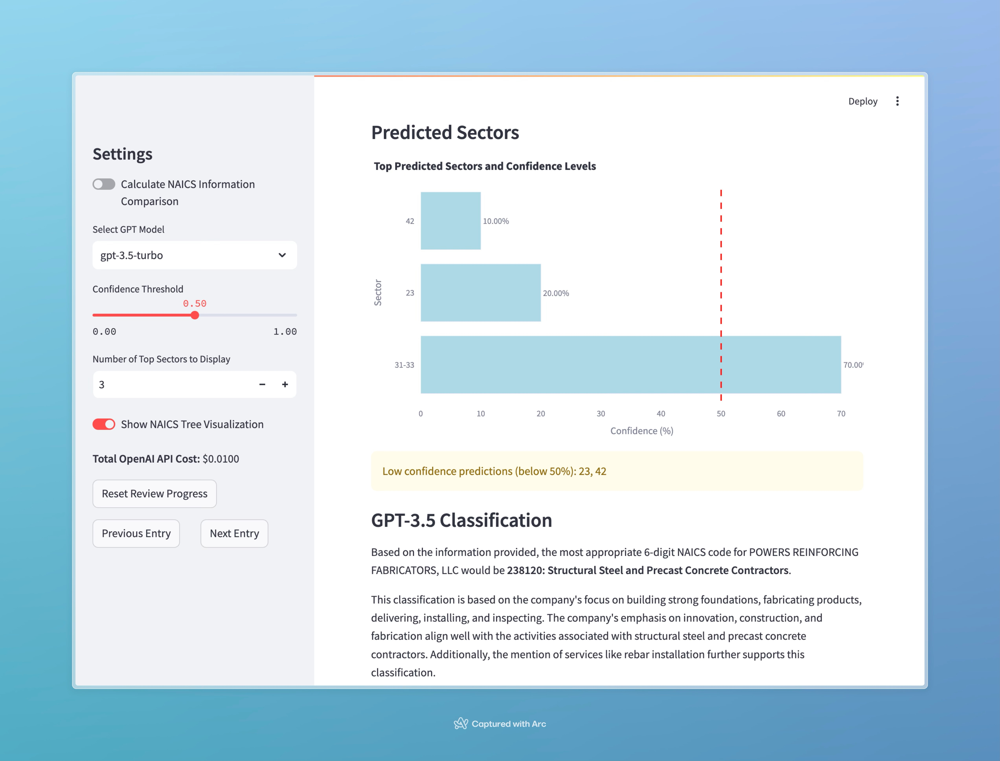
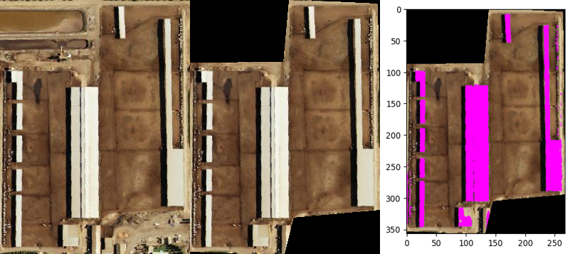

kayla huang
senior @ harvard studying cs + government
past projects
a random assortment of things i've made
LLM-powered conflict inspection
Date: Aug 2024
Another thesis tool, this time for parsing conflict data and timelines. Given a conflict, the app will return a list of recent conflicts, a timeline of events for the selected conflict, and a list of parties involved. Users can also use the app to search for mentions of keywords in the GDELT database.
VQ-VAE for text compression via learnable tokenization
Date: Summer 2024
Over the summer, at Kempner, Theo and I built a VQ-VAE model for learnable tokenization. Under this framework, tokens are not calculated via BPE, but learned during a training process. Demonstrating compression capabilities, this is an example of how we can leverage learnable tokenization to improve the efficiency of LLMs.
NAICS code classification
Date: Aug 2024
Given a URL and a name for a company, the app will return the NAICS code for the company.
The promise of machine learning in violent conflict forecasting
Date: Mar 2024
At the intersection of geopolitics and AI, Ezra, Max, and I examine both the potential and the limitations of machine learning for conflict forecasting. In this paper, published in the Journal of Data and Policy, we explore modeling techniques for complex, civil conflict data and advocate for its use in data-driven policy making.
Review of literature generation with LLMs
Date: Nov 2023
As part of the laziness bourn of thesis research, I wrote a scraper to automate the generation of reviews of academic literature.
The state of technology and diplomacy
Date: June 2023
In this report, written under the guidance of advisors at Schmidt Futures, we explore the intersection of technology and diplomacy, and the role of AI in matters of peacebuilding.
Detecting cow feeding lots with computer vision
Date: Mar 2023
In conjunction with WattTime, we used computer vision to detect cow feeding lots from aerial imagery. Primarily, this is to verify and guard against inaccuracies in self-reporting CAFOs, which can drastically change carbon emissions for a given area.
